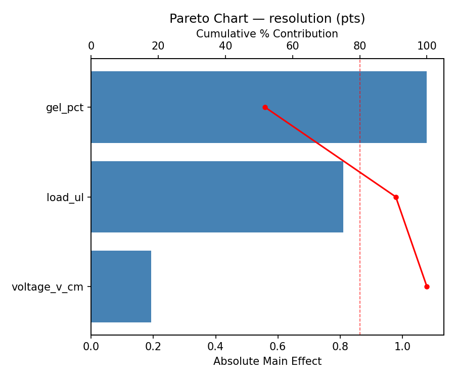
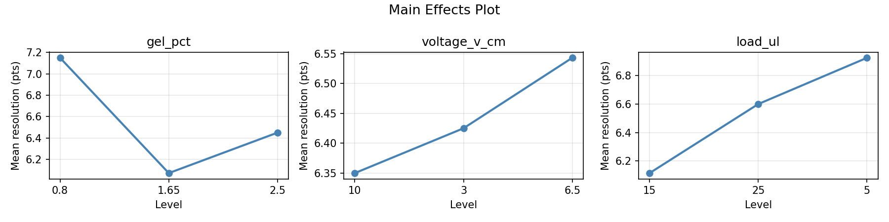
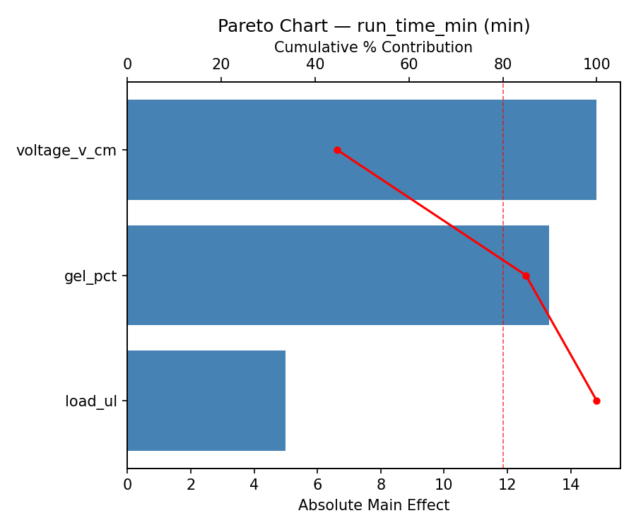
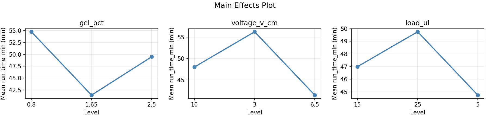
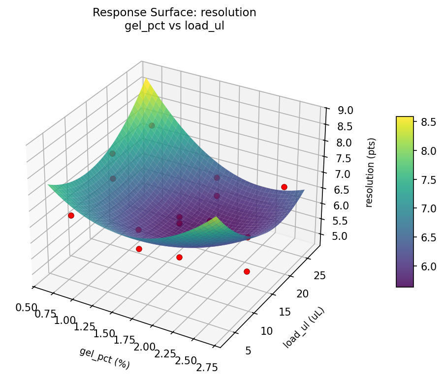
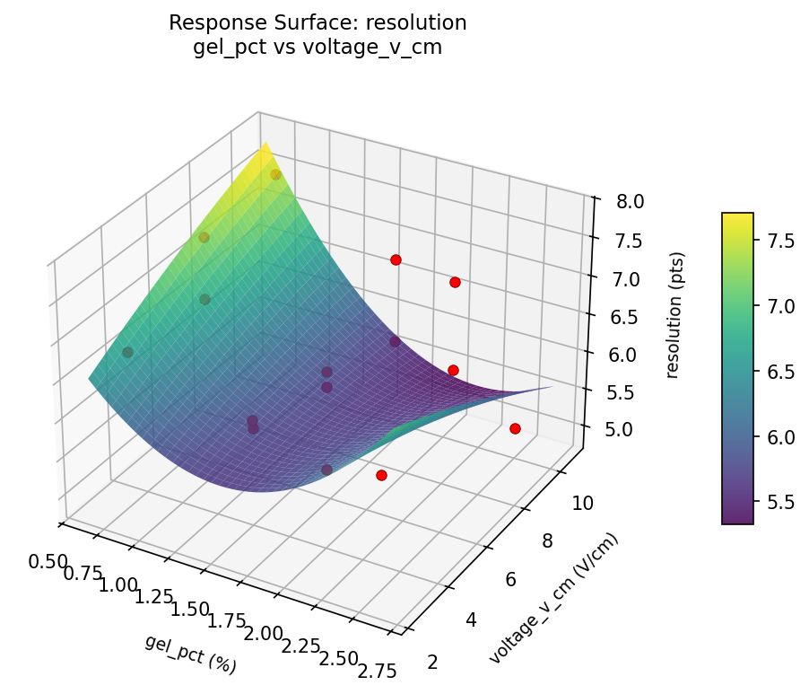
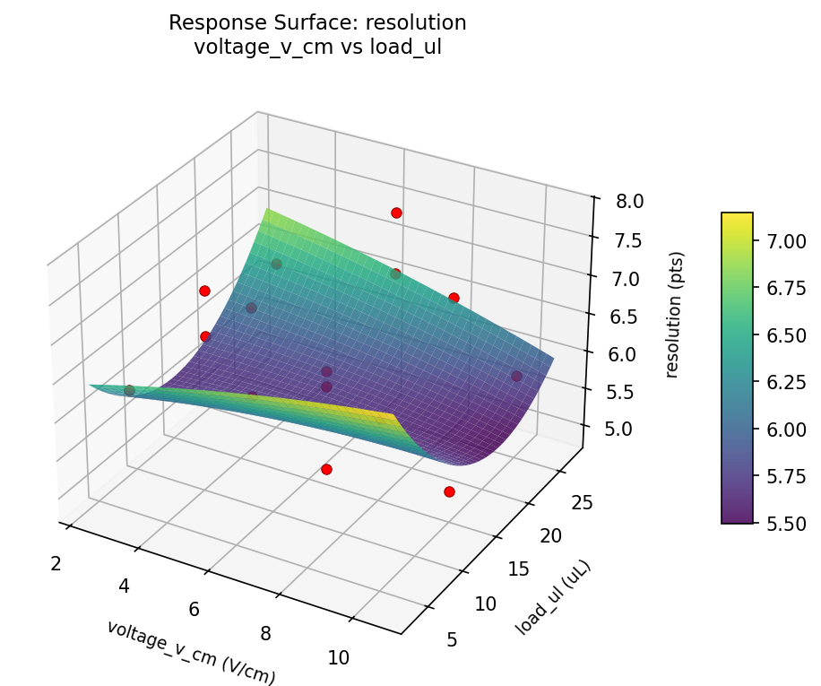
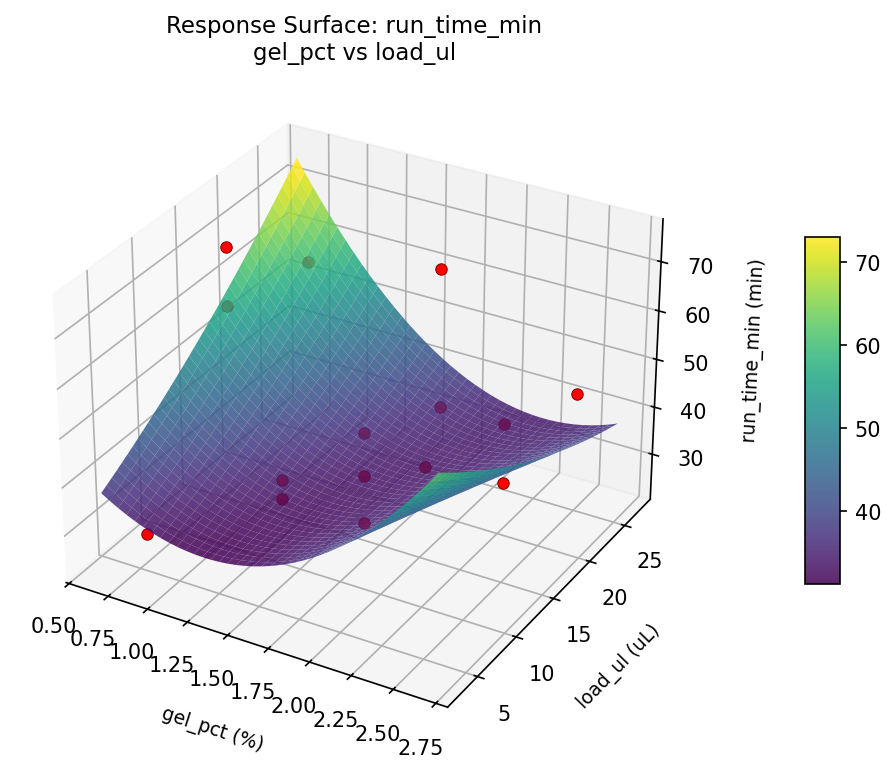
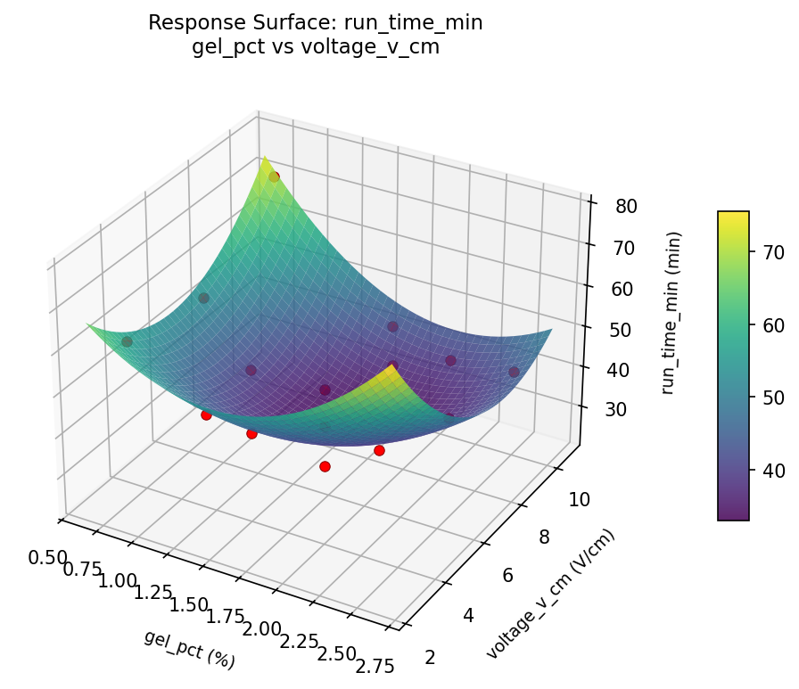
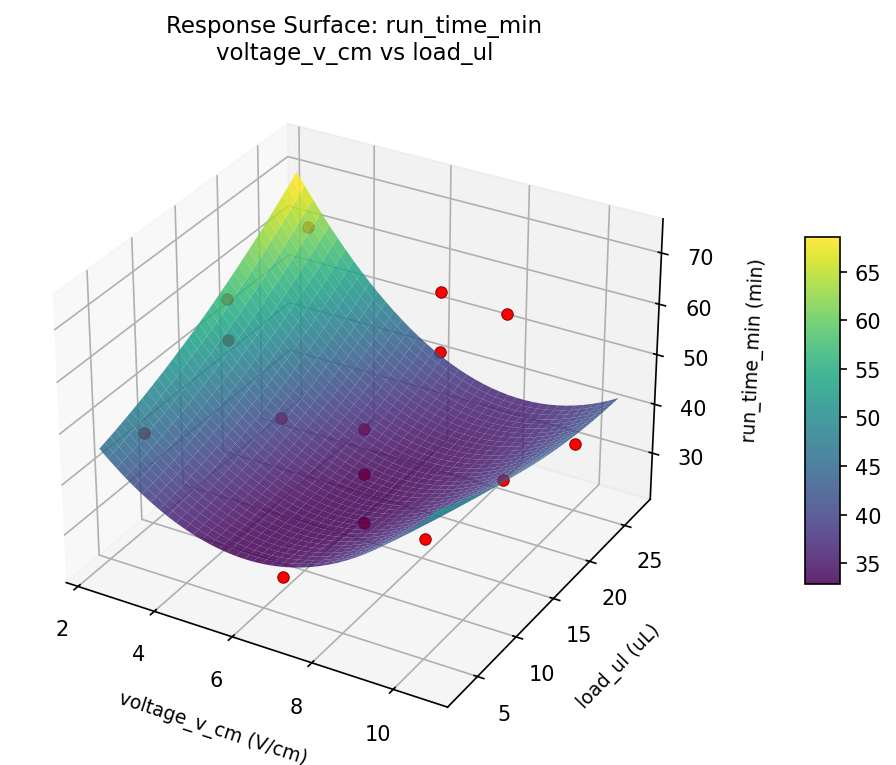

Experimental Setup
Factors
| Factor | Low | High | Unit |
|---|
gel_pct | 0.8 | 2.5 | % |
voltage_v_cm | 3 | 10 | V/cm |
load_ul | 5 | 25 | uL |
Fixed: buffer = TAE_1x, stain = ethidium_bromide
Responses
| Response | Direction | Unit |
|---|
resolution | ↑ maximize | pts |
run_time_min | ↓ minimize | min |
Configuration
{
"metadata": {
"name": "Gel Electrophoresis Resolution",
"description": "Box-Behnken design to maximize band resolution and minimize run time by tuning gel percentage, voltage, and loading volume"
},
"factors": [
{
"name": "gel_pct",
"levels": [
"0.8",
"2.5"
],
"type": "continuous",
"unit": "%"
},
{
"name": "voltage_v_cm",
"levels": [
"3",
"10"
],
"type": "continuous",
"unit": "V/cm"
},
{
"name": "load_ul",
"levels": [
"5",
"25"
],
"type": "continuous",
"unit": "uL"
}
],
"fixed_factors": {
"buffer": "TAE_1x",
"stain": "ethidium_bromide"
},
"responses": [
{
"name": "resolution",
"optimize": "maximize",
"unit": "pts"
},
{
"name": "run_time_min",
"optimize": "minimize",
"unit": "min"
}
],
"settings": {
"operation": "box_behnken",
"test_script": "use_cases/196_gel_electrophoresis/sim.sh"
}
}
Experimental Matrix
The Box-Behnken Design produces 15 runs. Each row is one experiment with specific factor settings.
| Run | gel_pct | voltage_v_cm | load_ul |
|---|
| 1 | 1.65 | 3 | 5 |
| 2 | 1.65 | 6.5 | 15 |
| 3 | 2.5 | 6.5 | 25 |
| 4 | 2.5 | 6.5 | 5 |
| 5 | 1.65 | 6.5 | 15 |
| 6 | 1.65 | 6.5 | 15 |
| 7 | 0.8 | 6.5 | 25 |
| 8 | 2.5 | 3 | 15 |
| 9 | 1.65 | 3 | 25 |
| 10 | 2.5 | 10 | 15 |
| 11 | 0.8 | 6.5 | 5 |
| 12 | 1.65 | 10 | 25 |
| 13 | 0.8 | 3 | 15 |
| 14 | 0.8 | 10 | 15 |
| 15 | 1.65 | 10 | 5 |
Step-by-Step Workflow
1
Preview the design
$ python doe.py info --config use_cases/196_gel_electrophoresis/config.json
2
Generate the runner script
$ python doe.py generate --config use_cases/196_gel_electrophoresis/config.json \
--output use_cases/196_gel_electrophoresis/results/run.sh --seed 42
3
Execute the experiments
$ bash use_cases/196_gel_electrophoresis/results/run.sh
4
Analyze results
$ python doe.py analyze --config use_cases/196_gel_electrophoresis/config.json
5
Get optimization recommendations
$ python doe.py optimize --config use_cases/196_gel_electrophoresis/config.json
6
Generate the HTML report
$ python doe.py report --config use_cases/196_gel_electrophoresis/config.json \
--output use_cases/196_gel_electrophoresis/results/report.html
Features Exercised
| Feature | Value |
|---|
| Design type | box_behnken |
| Factor types | continuous (all 3) |
| Arg style | double-dash |
| Responses | 2 (resolution ↑, run_time_min ↓) |
| Total runs | 15 |
Analysis Results
Generated from actual experiment runs using the DOE Helper Tool.
Response: resolution
Top factors: gel_pct (51.8%), load_ul (38.9%), voltage_v_cm (9.3%).
Pareto Chart

Main Effects Plot

Response: run_time_min
Top factors: voltage_v_cm (44.7%), gel_pct (40.2%), load_ul (15.1%).
Pareto Chart

Main Effects Plot

Response Surface Plots
3D surfaces fitted with quadratic RSM. Red dots are observed data points.
resolution gel pct vs load ul

resolution gel pct vs voltage v cm

resolution voltage v cm vs load ul

run time min gel pct vs load ul

run time min gel pct vs voltage v cm

run time min voltage v cm vs load ul

Full Analysis Output
RSM surface: rsm_resolution_gel_pct_vs_voltage_v_cm.png
RSM surface: rsm_resolution_gel_pct_vs_load_ul.png
RSM surface: rsm_resolution_voltage_v_cm_vs_load_ul.png
RSM surface: rsm_run_time_min_gel_pct_vs_voltage_v_cm.png
RSM surface: rsm_run_time_min_gel_pct_vs_load_ul.png
RSM surface: rsm_run_time_min_voltage_v_cm_vs_load_ul.png
=== Main Effects: resolution ===
Factor Effect Std Error % Contribution
--------------------------------------------------------------
gel_pct 1.0786 0.2149 51.8%
load_ul 0.8107 0.2149 38.9%
voltage_v_cm 0.1929 0.2149 9.3%
=== Summary Statistics: resolution ===
gel_pct:
Level N Mean Std Min Max
------------------------------------------------------------
0.8 4 7.1500 0.4655 6.7000 7.6000
1.65 7 6.0714 0.6211 4.9000 6.9000
2.5 4 6.4500 1.1210 5.1000 7.8000
voltage_v_cm:
Level N Mean Std Min Max
------------------------------------------------------------
10 4 6.3500 1.1150 5.1000 7.6000
3 4 6.4250 0.2630 6.2000 6.8000
6.5 7 6.5429 0.9710 4.9000 7.8000
load_ul:
Level N Mean Std Min Max
------------------------------------------------------------
15 7 6.1143 0.9317 4.9000 7.6000
25 4 6.6000 0.7071 5.8000 7.5000
5 4 6.9250 0.6344 6.3000 7.8000
=== Main Effects: run_time_min ===
Factor Effect Std Error % Contribution
--------------------------------------------------------------
voltage_v_cm 14.8214 3.5868 44.7%
gel_pct 13.3214 3.5868 40.2%
load_ul 5.0000 3.5868 15.1%
=== Summary Statistics: run_time_min ===
gel_pct:
Level N Mean Std Min Max
------------------------------------------------------------
0.8 4 54.7500 19.0853 28.0000 73.0000
1.65 7 41.4286 12.4614 24.0000 63.0000
2.5 4 49.5000 8.0623 41.0000 59.0000
voltage_v_cm:
Level N Mean Std Min Max
------------------------------------------------------------
10 4 48.0000 17.1853 34.0000 73.0000
3 4 56.2500 6.9940 48.0000 63.0000
6.5 7 41.4286 13.5752 24.0000 59.0000
load_ul:
Level N Mean Std Min Max
------------------------------------------------------------
15 7 47.0000 16.6233 24.0000 73.0000
25 4 49.7500 12.8938 34.0000 63.0000
5 4 44.7500 12.8420 28.0000 59.0000
Pareto chart (resolution): use_cases/196_gel_electrophoresis/results/analysis/pareto_resolution.png
Pareto chart (run_time_min): use_cases/196_gel_electrophoresis/results/analysis/pareto_run_time_min.png
Main effects (resolution): use_cases/196_gel_electrophoresis/results/analysis/main_effects_resolution.png
Main effects (run_time_min): use_cases/196_gel_electrophoresis/results/analysis/main_effects_run_time_min.png
Optimization Recommendations
=== Optimization: resolution ===
Direction: maximize
Best observed run: #1
gel_pct = 2.5
voltage_v_cm = 6.5
load_ul = 5
Value: 7.8
RSM Model (linear, R² = 0.2179, Adj R² = 0.0046):
Coefficients:
intercept +6.4600
gel_pct +0.4875
voltage_v_cm +0.0000
load_ul +0.1625
RSM Model (quadratic, R² = 0.6871, Adj R² = 0.1238):
Coefficients:
intercept +6.1667
gel_pct +0.4875
voltage_v_cm +0.0000
load_ul +0.1625
gel_pct*voltage_v_cm +0.2250
gel_pct*load_ul -0.8500
voltage_v_cm*load_ul -0.4750
gel_pct^2 +0.2417
voltage_v_cm^2 +0.3167
load_ul^2 -0.0083
Curvature analysis:
voltage_v_cm coef=+0.3167 convex (has a minimum)
gel_pct coef=+0.2417 convex (has a minimum)
load_ul coef=-0.0083 negligible curvature
Notable interactions:
gel_pct*load_ul coef=-0.8500 (antagonistic)
voltage_v_cm*load_ul coef=-0.4750 (antagonistic)
Predicted optimum (from quadratic model):
gel_pct = 2.5
voltage_v_cm = 6.5
load_ul = 5
Predicted value: 7.5750
Model quality: Moderate fit — use predictions directionally, not precisely.
Factor importance:
1. gel_pct (effect: 1.0, contribution: 60.9%)
2. load_ul (effect: 0.3, contribution: 20.3%)
3. voltage_v_cm (effect: 0.3, contribution: 18.8%)
=== Optimization: run_time_min ===
Direction: minimize
Best observed run: #14
gel_pct = 1.65
voltage_v_cm = 6.5
load_ul = 15
Value: 24.0
RSM Model (linear, R² = 0.1660, Adj R² = -0.0614):
Coefficients:
intercept +47.1333
gel_pct +6.2500
voltage_v_cm +4.0000
load_ul -1.0000
RSM Model (quadratic, R² = 0.7887, Adj R² = 0.4082):
Coefficients:
intercept +32.0000
gel_pct +6.2500
voltage_v_cm +4.0000
load_ul -1.0000
gel_pct*voltage_v_cm +4.2500
gel_pct*load_ul -7.2500
voltage_v_cm*load_ul -8.2500
gel_pct^2 +8.6250
voltage_v_cm^2 +15.6250
load_ul^2 +4.1250
Curvature analysis:
voltage_v_cm coef=+15.6250 convex (has a minimum)
gel_pct coef=+8.6250 convex (has a minimum)
load_ul coef=+4.1250 convex (has a minimum)
Notable interactions:
voltage_v_cm*load_ul coef=-8.2500 (antagonistic)
gel_pct*load_ul coef=-7.2500 (antagonistic)
gel_pct*voltage_v_cm coef=+4.2500 (synergistic)
Predicted optimum (from quadratic model):
gel_pct = 2.5
voltage_v_cm = 10
load_ul = 15
Predicted value: 70.7500
Model quality: Good fit — general trends are captured, some noise remains.
Factor importance:
1. voltage_v_cm (effect: 18.7, contribution: 52.6%)
2. gel_pct (effect: 13.5, contribution: 37.9%)
3. load_ul (effect: 3.4, contribution: 9.5%)